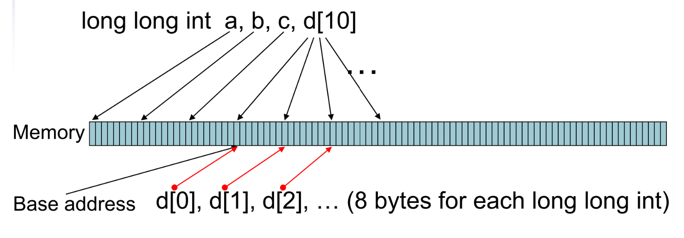
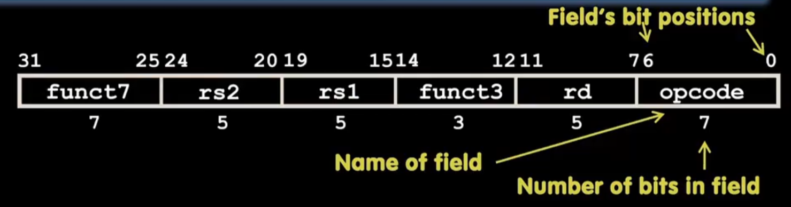
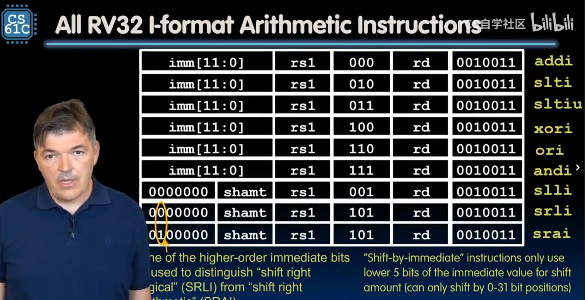
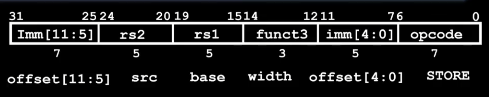
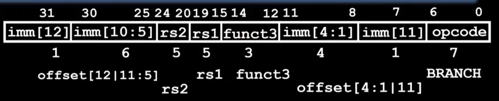
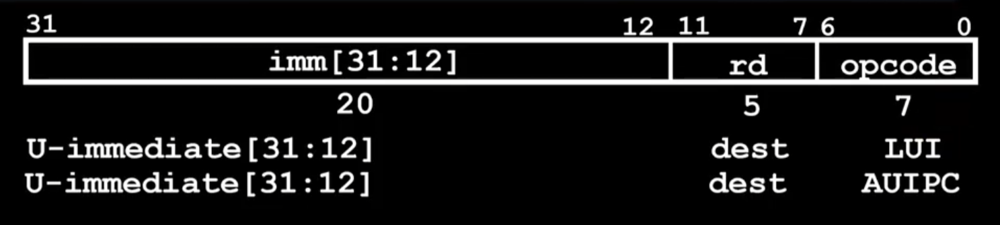

Chapter 3 RISC-V
这一章主要是讲riscv汇编的内容，汇编做的事情很简单，从Memory读入数据到寄存器，在内部进行计算，写回Memory，因此我们需要以下知识：
- 内存是什么
- 寄存器是什么
- 读写指令有哪些
- 计算指令有哪些
- 指令的每一位是怎么控制cpu的
- 怎么写汇编语言
- 怎么把高级语言转换为机器看得懂的指令
0 基础知识

1. 内存寻址基础
在 RISC-V 中，内存就像一排排整齐的储物柜，每个柜子都有一个唯一的地址。
- 最小单位： 每个地址对应 1 字节 (8 bits)。
- 字长 (Word)： 在 RV32（32 位版本）中，一个“字”是 32 位（4 字节）。
- 寻址方式： RISC-V 使用 Load/Store 架构。这意味着：
- CPU 不能直接对内存里的数做加法。
- 必须先用
lw(Load Word) 把数据从内存搬到寄存器。 - 算完后再用
sw(Store Word) 把结果搬回内存。
边界对齐 (Alignment)
虽然 RISC-V 支持非对齐访问（比如从地址 1 开始读 4 字节），但对齐访问（地址能被 4 整除）的速度要快得多。如果地址没对齐，硬件可能需要跑两趟才能把数据取完整。
2. 大端序 vs 小端序
当你往内存里存一个超过 1 字节的数据（比如一个 32 位的整数 0x12345678）时，问题来了：这 4 个字节在内存的 4 个格子房里该怎么排队？
小端序 (Little-Endian)
- 规则： 低位字节存在低地址（左侧），高位字节存在高地址。
- 记忆法： “小端在前”。
- 例子： 存储
0x12345678 - 地址
N:0x78(最低位字节) - 地址
N+1:0x56 - 地址
N+2:0x34 - 地址
N+3:0x12(最高位字节) - 特点： 现代主流架构（x86, ARM, RISC-V）默认都偏向小端序，因为它在处理类型转换（如 32 位转 8 位）时逻辑更简单。
大端序 (Big-Endian)
- 规则： 高位字节存在低地址，就像我们平时写字的习惯。
- 例子： 存储
0x12345678 - 地址
N:0x12(最高位字节) - 地址
N+1:0x34 - ...
- 特点： 常见于网络协议（如 TCP/IP）和一些老的架构（如 PowerPC）。
1 精简指令集与复杂指令集
指令集架构（ISA）在历史上主要分为两大阵营分别被称为 RISC 和 CISC。
1. 指令集的两大分类
| 类别 | 全称 | 核心理念 | 代表作 |
|---|---|---|---|
| RISC | Reduced Instruction Set Computer (精简指令集) | 指令简单且长度固定。每条指令只做一件小事，通过多条指令组合完成复杂任务。 | RISC-V、ARM (手机芯片)、MIPS |
| CISC | Complex Instruction Set Computer (复杂指令集) | 指令丰富且长度不固定。一条指令可以完成非常复杂的任务（比如直接把内存里的两个数相加）。 | x86 (Intel, AMD 电脑处理器) |
2. 为什么 RISC-V 属于 RISC？
名字里的 RISC 已经揭示了它的身份。RISC-V 的设计目标就是极简。
- 定长指令： 在 RISC-V 中，基础指令通常都是 32 位长。这让 CPU 处理起来非常快，就像在标准化的流水线上组装零件。
- Load/Store 架构： 这是一个非常关键的特征。在 RISC-V 中，你不能直接对内存里的数据进行加减法。你必须：
- 把数据从内存加载（Load）到寄存器。
- 在寄存器里进行运算。
- 把结果存储（Store）回内存。
- 模块化： 这是 RISC-V 最独特的地方。它有一个很小的“基础指令集”（只有几十条指令），如果你需要更强的功能（比如浮点运算、乘法），可以像搭积木一样加上对应的扩展模块。

可以参考cs61c的架构介绍
这个计算机模型的图非常重要。如果学过数逻的同学可能有一些印象。
左侧是数据加工部分，包括；
- 组合电路控制信号
- PC记录下一条指令的地址
- 通用寄存器
- ALU计算单元
右侧是存放数据的内存
大概的交互流程是，左侧的控制模块读入指令，组合电路根据指令计算一些控制信号，然后计算地址，用于去内存中对应的单元读回数据到寄存器，接着在ALU中完成计算，然后如果需要的话，再次写回内存。
2 通用寄存器
在 RISC-V 架构中，不管是 32 位（RV32）还是 64 位（RV64），最核心的就是那 32 个通用寄存器。
为了方便记忆和编程，每一个寄存器都有两个名字：
- 硬件名（x0 - x31）： 物理上的编号，CPU 只认这个。
- ABI 别名（如 zero, ra, sp）： 方便程序员理解其用途的“外号”。
RISC-V 通用寄存器一览表
| 硬件名 | 别名 | 用途描述 | 谁负责保存 |
|---|---|---|---|
| x0 | zero | 硬连线 0：读永远是 0，写会被忽略。非常常用！ | - |
| x1 | ra | 返回地址 (Return Address)：保存函数结束要跳回哪。 | 调用者 |
| x2 | sp | 栈指针 (Stack Pointer)：管理内存里的栈空间。 | 被调用者 |
| x3 | gp | 全局指针 (Global Pointer)：加速全局变量访问。 | - |
| x4 | tp | 线程指针 (Thread Pointer)：用于多线程数据。 | - |
| x5 | t0 | 临时寄存器 (Temporary)：随便用，不用保存。 | 调用者 |
| x6-x7 | t1-t2 | 临时寄存器。 | 调用者 |
| x8 | s0 / fp | 保存寄存器 / 帧指针：函数内必须保护好的数据。 | 被调用者 |
| x9 | s1 | 保存寄存器。 | 被调用者 |
| x10-x11 | a0-a1 | 参数/返回值：传参给函数，也带回返回值。 | 调用者 |
| x12-x17 | a2-a7 | 函数参数：用于传递第 3 到 第 8 个参数。 | 调用者 |
| x18-x27 | s2-s11 | 保存寄存器 (Saved)：长期存放需要跨函数保存的数据。 | 被调用者 |
| x28-x31 | t3-t6 | 临时寄存器。 | 调用者 |
三个最重要的角色
可以先重点记住这三个寄存器：
x0 (zero)：它的存在让指令集变得极简。- 比如 RISC-V 没有专门的“复制”指令（MOV）。
- 如果你想把
x1的值给x2，就用加法：add x2, x1, x0（即 \(x2 = x1 + 0\)）。 x1 (return address)：函数的“回迁地址”。- 当程序跳进一个子函数时，它会偷偷记下当前位置到
ra。等函数跑完了，执行ret指令，其实就是跳回ra指向的地方。 x2 (stack pointer)：程序运行的“地基”。- 所有的局部变量、函数调用的嵌套全靠
sp指向的内存栈来维护。
谁负责保存
- 调用者保存 (Caller-saved, t0-t6)： 就像你借别人的车，还回去前不用洗车，对方默认你会弄脏。如果你（调用者）还要用里面的旧数据，得自己先备份。因为顾名思义，这几个寄存器里面存的是临时值，如果你要调用其他函数，这些函数可能会破坏寄存器里的值。
- 被调用者保存 (Callee-saved, s0-s11)： 就像你租别人的房子，走的时候必须打扫干净（还原寄存器原值）。这几个寄存器里的是saved，保存的变量，默认不会更改。所以被调用的函数如果要借用寄存器进行运算，需要先把原来的值存到栈上，退出时恢复。
3 RISC-V 六大基础指令类型
在 RISC-V 中，指令格式的设计非常优雅且规整。为了让硬件解码（Decoding）尽可能简单，所有的基础指令长度都是 32 位，并根据功能需求划分为 6 种核心类型。
这些类型的命名非常直观，主要取决于指令需要多少个寄存器或立即数（即指令中直接嵌入的常数）。
1. R-type (Register) - 寄存器型
- 用途： 纯粹的寄存器与寄存器之间的运算。
- 特点： 需要 3 个寄存器（2 个源寄存器
rs1,rs2和 1 个目标寄存器rd）。 - 例子：
add rd, rs1, rs2(\(rd = rs1 + rs2\))。
2. I-type (Immediate) - 立即数型
- 用途： 寄存器与常数（立即数）的运算，或者从内存读取数据（Load）。
- 特点： 包含一个 12 位的立即数。
- 例子： *
addi rd, rs1, 10(\(rd = rs1 + 10\))。 lw rd, offset(rs1)(从内存装载数据到寄存器)。
3. S-type (Store) - 存储型
- 用途： 将寄存器的数据写入内存（Store）。
- 特点： 没有目标寄存器（因为是写内存），它的 12 位立即数被拆成了两部分，分散在指令中（为了保持硬件解码时
rs1和rs2的位置固定）。 - 例子：
sw rs2, offset(rs1)(将rs2的值存入内存)。
4. B-type (Branch) - 分支跳转型
- 用途： 条件判断跳转（如果...就跳到...）。
- 特点： 比较两个寄存器，如果条件成立，根据 12 位立即数（表示偏移量）进行跳转。
- 例子：
beq rs1, rs2, label(如果rs1 == rs2，跳到 label)。
5. U-type (Upper Immediate) - 高位立即数型
- 用途： 用于处理大常数（32 位中的高 20 位）。
- 特点： 包含一个 20 位的立即数，直接加载到目标寄存器的高位。
- 例子：
lui rd, 0x12345(Load Upper Immediate)。
6. J-type (Jump) - 无条件跳转型
- 用途： 函数调用或直接跳转。
- 特点： 包含一个 20 位的立即数作为跳转目标。
- 例子：
jal rd, label(Jump and Link，跳转并将返回地址存入rd)。
为什么设计这么多类型？
RISC-V 这样设计的精妙之处在于：所有指令的 rs1, rs2 和 rd 都在固定的位置。
- 对硬件友好： CPU 的解码器不需要复杂的逻辑去寻找“谁是源寄存器”，它永远看那几个固定的位（Bits）就行了。
- 节省功耗： 这种一致性降低了电路的复杂度和运行时的功耗。
快速总结对比表
| 类型 | 主要用途 | 关键操作数 |
|---|---|---|
| R | 算术逻辑运算 | rs1, rs2, rd |
| I | 加常数、Load、系统调用 | rs1, rd, imm |
| S | 写内存 (Store) | rs1, rs2, imm |
| B | 判断跳转 (Branch) | rs1, rs2, imm |
| U | 加载大常数 | rd, imm |
| J | 直接跳转 (Jump) | rd, imm |
课本上介绍的 RISC-V 指令（ lr.d , sc.d 被省略了）列表如下：

在 RISC 指令集中，只有 load 系列和 store 系列指令能够访问内存。
RISC-V 的跳转指令的 offset 是基于当前指令的地址的偏移；这不同于其他一些汇编是基于下一条指令的偏移的。即如果是跳转语句 PC 就不 +4 了，而是直接 +offset。
lw , lwu 等操作都会清零高位。
4 伪指令
1. 什么是 RISC-V 伪指令
RISC-V 设计哲学是 精简 (RISC)。为了保持硬件简洁，RISC-V 的基础指令集非常小。但为了让程序员写代码更方便，汇编器提供了一系列“伪指令”。
- 本质：伪指令并不存在于硬件的指令解码器中。
- 转化：当你写下一条伪指令时，汇编器（如 GCC）会自动将其翻译成一条或多条基础指令。
2. 常见的伪指令分类
A. 数据传输与加载
这是最常用的部分，用来简化内存地址的操作。
| 伪指令 | 含义 | 等效的基础指令 | 描述 |
|---|---|---|---|
li rd, imm |
Load Immediate | addi rd, x0, imm |
加载立即数到寄存器 |
la rd, symbol |
Load Address | auipc + addi |
加载全局变量的地址 |
mv rd, rs |
Move | addi rd, rs, 0 |
寄存器间数值复制 |
B. 条件跳转
RISC-V 基础指令只提供“大于等于”、“小于”等基本比较。
| 伪指令 | 含义 | 等效的基础指令 |
|---|---|---|
beqz rs, label |
Branch if Equal Zero | beq rs, x0, label |
bnez rs, label |
Branch if Not Equal Zero | bne rs, x0, label |
ble rs, rt, label |
Branch if \(\le\) | bge rt, rs, label (交换操作数) |
C. 无条件跳转与函数调用
| 伪指令 | 含义 | 等效的基础指令 | 描述 |
|---|---|---|---|
j label |
Jump | jal x0, label |
无条件跳转，不保存返回地址 |
jr rs |
Jump Register | jalr x0, 0(rs) |
跳转到寄存器指向的地址 |
ret |
Return | jalr x0, 0(ra) |
从子程序返回 |
call symbol |
Call | auipc + jalr |
调用远程函数 |
3. 为什么需要 x0
在 RISC-V 中，很多伪指令能够实现，全靠 x0 寄存器（其值恒为 0）。
例如，RISC-V 没有专门的 NOT (取反) 指令，它是通过 XORI 实现的：
伪指令：not rd, rs
翻译后：xori rd, rs, -1
再比如清零操作：
伪指令：
fcvt.s.w fa0, x0(将整数0转为浮点0)
5 指令32位具体如何分配
这是一个非常核心的问题。RISC-V 的设计师们在分配这 32 位（Bit）时，展现了极高的“强迫症”——为了让硬件电路连线最简单，他们尽可能让相同功能的位出现在固定的位置。
1. 核心布局图示
在看具体分配前，先记住这个规则：Opcode（操作码）永远在最低的 7 位。
2. 六种类型的详细位分配
我们将 32 位从高到低编号为 [31] 到 [0]。
R-type (寄存器-寄存器)
用于 add, sub, and 等运算。
[31:25](7位): funct7 —— 辅助操作码（比如区分加法和减法）。[24:20](5位): rs2 —— 第二个源寄存器编号。[19:15](5位): rs1 —— 第一个源寄存器编号。[14:12](3位): funct3 —— 辅助操作码（区分不同类型的运算）。[11:7](5位): rd —— 目标寄存器编号（运算结果存哪）。[6:0](7位): opcode —— 基本操作码。

I-type (寄存器-立即数 / Load)
用于 addi, lw, jalr 等。
[31:20](12位): imm[11:0] —— 一个 12 位的立即数（常数）。[19:15](5位): rs1 —— 源寄存器。[14:12](3位): funct3。[11:7](5位): rd —— 目标寄存器。[6:0](7位): opcode。

其中 I 型指令有两个条目；这是因为立即数移位操作 slli , srli , srai 并不可能对一个 64 位寄存器进行大于 63 位的移位操作，因此 12 位 imm 中只有后 6 位能实际被用到，因此前面 6 位被用来作为一个额外的操作码字段，如上图中第二个 I 条目那样。其他 I 型指令适用第一个 I 条目。
S-type (Store 存储)
用于 sw, sb（存入内存）。
[31:25](7位): imm[11:5] —— 立即数的高 7 位。[24:20](5位): rs2 —— 要存入内存的那个数据源。[19:15](5位): rs1 —— 内存地址的基址寄存器。[14:12](3位): funct3。[11:7](5位): imm[4:0] —— 立即数的低 5 位。[6:0](7位): opcode。
注意： S-type 把立即数拆开了！这是为了让
rs1和rs2的位置和 R-type 保持一致。

B-type (Branch 分支)
用于 beq, bne（条件跳转）。
- 布局与 S-type 类似，但 12 位立即数经过了打乱重组（为了处理跳转地址的特殊性，比如地址总是 2 字节对齐，所以不存最低位的 0）。

B-type（分支指令）之所以把立即数（Immediate）搞得像乱码一样，是为了压榨硬件效率。
为什么忽略最低位？
B-type指令是PC Relative PC相关的，也就是说，相对于当前的指令，向前或者向后跳转多少条指令。而RISC-V中每条指令都是32位，也就是4字节的，那么我们是不是可以忽略最后两位，来记录跳转了k * 4B的地址呢？然而实际上，B-type仅忽略了最低位。
如果是 4 字节对齐，地址应该永远能被 4 整除（即最后两位二进制是 00）。但 RISC-V 的设计者在这里做了一个折中：
- 支持压缩指令集 (C 扩展)： RISC-V 有一个可选的扩展叫 RVC，它允许指令长度为 16 位（2 字节）。
- 半字对齐： 为了兼容这种 16 位的指令，所有的跳转目标地址（包括分支指令）必须至少是 2 字节（半字）对齐的。
- 多出一倍范围： 如果地址是 2 字节对齐，那么地址的最后一位二进制 永远是 0。既然永远是 0，那我在指令的 32 位代码里就不存这个 0，而是把剩下的位数往左挪一位。
- 结果： 原本 12 位的立即数，通过省掉最后那个 0，实际上可以表示 13 位的范围（\(-4096\) 到 \(+4094\) 字节）。这让跳转范围扩大了一倍。
纠正一个误解： 即使 RISC-V 基础指令是 32 位（4 字节），但跳转的目标地址并不一定要跳到 4 的倍数上（为了兼容 16 位指令），所以它只敢忽略最后 1 位，而不是 2 位。
为什么立即数要“乱序重组”？
如果你看 B-type 的立即数分布，会发现它非常凌乱，位（bit）的顺序是：[12][10:5] 和 [4:1][11]。
这看起来像是个灾难，但对电路设计者来说却是福音。请对比 S-type (Store) 和 B-type (Branch)：
| 类型 | 31位 (最高位) | 30:25位 | 24:21位 | 11:8位 | 7位 |
|---|---|---|---|---|---|
| S-type | imm[11] | imm[10:5] | imm[4:1] | imm[4:1] 里的后半部 | imm[0] |
| B-type | imm[12] | imm[10:5] | imm[4:1] | imm[4:1] | imm[11] |
原因只有两个字：对齐。
- 符号位对齐： 无论什么类型的指令，立即数的最高位（符号位）永远在指令的第 31 位。这样硬件在做符号扩展时，只需要从第 31 位拉一根电线就行，不需要判断指令类型。
- 大部分位固定： 你注意看，
imm[10:5]和imm[4:1]在 S-type 和 B-type 中的位置是完全一样的。 - 减少硬件选择器（Mux）： 如果为了让立即数在指令里看起来“顺眼”而打乱位置，那么 CPU 硬件就需要增加很多“多路选择器”来决定要把哪一位送到哪。RISC-V 宁愿让软件编写者（汇编器/编译器）麻烦一点，也要让硬件电路简单到极致。
Tip
把指令从内存读进 CPU 时，硬件就像一个流水线工人：
- 工人 A： 负责从固定的
[31]位取符号。 - 工人 B： 负责从固定的
[24:21]位取立即数的中段。 - 工人 C： 只有在极少数位（比如 B-type 的第 7 位和第 11 位）需要根据指令类型稍微调换一下手里的线。
这种设计让 RISC-V 的译码器（Decoder）异常简单，从而实现更高的主频和更低的功耗。
U-type (Upper Immediate)
用于 lui, auipc（大立即数）。
[31:12](20位): imm[31:12] —— 20 位的大常数。[11:7](5位): rd —— 目标寄存器。[6:0](7位): opcode。

J-type (Jump)
用于 jal（无条件跳转）。
[31:12](20位): 立即数的打乱组合。[11:7](5位): rd（保存返回地址）。[6:0](7位): opcode。
为什么这么分
你可以发现几个非常有意思的共同点，这就是 RISC-V 的美学所在：
- 寄存器位置固定：
rs1永远在15-19位。rs2永远在20-24位。rd永远在7-11位。- 好处： CPU 硬件可以在还没弄清楚指令到底要干嘛时，就开始并行读取寄存器堆的数据了。
- 立即数符号位固定：
- 所有类型的立即数，其最高位（符号位）永远在指令的第 31 位。
- 好处： 硬件做符号扩展（Sign-extension）极其简单，一根电线直接连过去就行。
- Opcode 固定：
- 低 7 位永远是主意图识别区。
Note
举个例子：addi x5, x6, 10 (I-type)
如果我们要把这条指令转换成二进制：
- opcode: I-type 的算术运算通常是
0010011。 - rd:
x5\(\rightarrow\)00101。 - funct3:
addi对应000。 - rs1:
x6\(\rightarrow\)01110。 - imm:
10\(\rightarrow\)000000001010。
组合起来就是：000000001010 01110 000 00101 0010011。
6 编写汇编
学习 RISC-V 汇编最快的方法是理解 寄存器是如何传递数据 的。我们从最基础的数组操作开始，一步步进阶到递归。
1. 数组取数
假设我们要取数组 A[3] 的值。已知数组首地址在 x10，结果存入 x11。
- 核心逻辑： 地址 = 基址 + (索引 × 元素大小)。
- 注意： 32位整数占 4 字节，所以
A[3]的偏移量是 \(3 \times 4 = 12\)。
代码段
2. 条件分支
实现逻辑：if (a == b) { a = a + 1; } else { a = a - 1; }
假设 a 在 x10，b 在 x11。
一般条件分支和你写的if是相反的条件，因为相反的时候才会跳转，不然就顺着执行，记得执行完之后要跳转到结束，不然会把else的部分再执行一遍。
代码段
bne x10, x11, else_part # 如果 x10 != x11，跳转到 else_part
addi x10, x10, 1 # if部分: a = a + 1
j end_if # 跳过 else 部分
else_part:
addi x10, x10, -1 # else部分: a = a - 1
end_if:
# 继续执行...
3. 循环
实现逻辑：计算 \(1+2+...+10\) 的和。
使用 x10 存结果（sum），x11 存计数器（i）。
代码段
li x10, 0 # sum = 0
li x11, 1 # i = 1
li x12, 10 # 上限 = 10
loop:
add x10, x10, x11 # sum = sum + i
addi x11, x11, 1 # i = i + 1
ble x11, x12, loop # 如果 i <= 10，跳回 loop
4.从数组循环取数
尝试从数组中循环去数字，假定数组元素为long long int，在 RISC-V 中，long long int（通常是 64 位，即 8 字节）的数组操作会比 32 位整数（4 字节）稍微复杂一点点，主要体现在地址偏移量和指令选择上。
为了让例子更具代表性，我们假设是在 RV64 指令集下（64 位架构），因为这是处理 long long 最自然的场景。
核心逻辑分析
- 元素大小： 每个
long long占 8 字节。 - 指令： * 读取数据使用
ld(Load Double-word，加载 64 位)。 - 如果是 32 位机器（RV32）处理 64 位数，则需要用两条
lw分两次读。 - 指针移动： 每次循环，数组指针需要 +8。
汇编代码：数组求和
假设：
- 数组首地址存放在
a0。 - 数组长度存放在
a1。 - 我们要计算总和，结果存放在
a2。
代码段
# 输入: a0 = 数组首地址, a1 = 数组长度(n)
# 输出: a2 = 累加和
array_sum_long:
li a2, 0 # 初始化 sum = 0
li t0, 0 # 初始化 计数器 i = 0
loop:
# 1. 检查循环条件：if (i >= n) 退出
bge t0, a1, end_loop
# 2. 计算当前元素的地址：addr = base + (i * 8)
# 在 RISC-V 中，可以用位移指令实现快速乘法 (i << 3 等于 i * 8)
slli t1, t0, 3 # t1 = t0 * 8 (左移3位)
add t2, a0, t1 # t2 = 数组首地址 + 偏移量
# 3. 取出数据
ld t3, 0(t2) # 从内存加载 8 字节到 t3 (Load Double-word)
# 4. 累加并更新计数器
add a2, a2, t3 # sum += t3
addi t0, t0, 1 # i++
# 5. 跳回循环开头
j loop
end_loop:
ret # 返回，结果在 a2 中
这里的关键细节
(1) 为什么是 slli t1, t0, 3？
在底层编程中，我们很少用 mul 指令来算地址，因为乘法比较慢。
int(4字节) \(\rightarrow\) 左移 2 位 (\(2^2 = 4\))long long(8字节) \(\rightarrow\) 左移 3 位 (\(2^3 = 8\))
(2) 关于 ld 指令
- 如果你是在 RV32（32位系统）上运行，是没有
ld指令的。你必须用两条lw分别读取低 32 位和高 32 位，然后用add指令处理进位（carry）。 - 但在 RV64 上，
ld可以一步到位。
(3) 数组访问的另一种写法（更高效）
其实在循环里，我们不需要每次都从 a0 开始算地址，可以直接“移动指针”：
代码段
loop_optimized:
beq a1, zero, end # 如果长度为0直接结束
ld t3, 0(a0) # 直接读取 a0 指向的数据
add a2, a2, t3 # 累加
addi a0, a0, 8 # 指针直接向后挪 8 字节
addi a1, a1, -1 # 长度 n--
bne a1, zero, loop_optimized
这种写法减少了循环内的指令数量，是性能优化的常用手段。
5. 使用栈来保护和恢复
理解函数调用中的栈操作，关键在于理解“租房协议”：你租用了 CPU 寄存器这段空间，但在退租（函数返回）时，必须把里面的家具摆回原样。
我们通过一个简单的场景演示：函数 A 调用函数 B。
假设函数 A 正在使用 s1 寄存器存一个重要数据，而函数 B 进来后也要用 s1
第一阶段：开辟空间与保存 (Prologue)
函数 B 开始时，先在栈上“挖个坑”，把 A 的数据埋进去。
代码段
# 函数 B 开始
func_b:
addi sp, sp, -16 # 1. 栈指针下移，分配 16 字节空间（必须是16的倍数）
sw ra, 12(sp) # 2. 保存返回地址（如果不存，你就回不去函数 A 了）
sw s1, 8(sp) # 3. 保存调用者 A 正在使用的 s1
第二阶段：执行任务
现在函数 B 可以放心地“蹂躏” s1 了。
代码段
第三阶段：恢复与释放 (Epilogue)
函数 B 结束前，必须把 A 的东西挖出来还回去。
代码段
lw s1, 8(sp) # 1. 把 A 之前存的旧 s1 读回来，覆盖掉 B 的值
lw ra, 12(sp) # 2. 把 A 的返回地址读回来
addi sp, sp, 16 # 3. 栈指针上移，释放空间（还掉内存）
ret # 4. 跳回到 ra 指向的地方（即回到 A）
为什么一定要存 ra 和 s 寄存器？
这是 RISC-V 的 ABI (应用程序二进制接口) 规定的义务：
ra (Return Address):
-
如果你在函数 B 里又调用了函数 C，执行
jal指令时硬件会自动把当前地址覆盖到ra。 -
后果： 如果你不先存起旧的
ra，函数 B 执行完ret时，会直接跳回 B 的中间，而不是跳回 A，导致死循环。
s0 - s11 (Saved Registers):
-
这些被称为“被调用者保存”寄存器。
-
义务： 谁弄乱的，谁负责打扫。
t0 - t6 (Temporary Registers):
-
这些不需要在函数开头保存。
-
逻辑： 默认它们是“易碎品”。函数 A 调用 B 时，A 应该默认 B 会弄坏
t寄存器。如果 A 觉得t0里的数很重要，A 得在调用 B 之前自己把它存到栈里。
完整的对比示例
假设我们要实现：\(f(x, y) = (x + y) \times (x - y)\)。
代码段
# 主函数调用 test(5, 3)
main:
li a0, 5
li a1, 3
jal ra, test
# 此时 a0 应该等于 16
# --- 函数开始 ---
test:
# --- 准备阶段 ---
addi sp, sp, -16
sw s1, 8(sp) # 我们打算用 s1 存 (x+y) 的结果
sw s2, 4(sp) # 我们打算用 s2 存 (x-y) 的结果
# --- 核心逻辑 ---
add s1, a0, a1 # s1 = 5 + 3 = 8
sub s2, a0, a1 # s2 = 5 - 3 = 2
mul a0, s1, s2 # a0 = 8 * 2 = 16 (返回值放 a0)
# --- 恢复阶段 ---
lw s2, 4(sp) # 还原 s2
lw s1, 8(sp) # 还原 s1
addi sp, sp, 16 # 释放栈
ret
你发现了吗？在上面的 test 函数中，并没有保存 ra。你能猜到为什么这次可以不存 ra 吗？
这是因为在test内部没有调用其他的函数，自然就不用担心寄存器的值被破坏
6. 递归
递归是汇编中最难的部分，因为你需要手动管理栈（Stack）来保存返回地址 ra。
逻辑：fib(n) = fib(n-1) + fib(n-2)，基准情况：n < 2 返回 n。
代码段
# 函数输入 n 在 a0，返回值存入 a0
fib:
# 1. 基准情况判断
li t0, 2
blt a0, t0, fib_exit # 如果 n < 2，直接返回 n (a0)
# 2. 准备递归：保存现场
addi sp, sp, -16 # 在栈上开辟 16 字节空间
sw ra, 12(sp) # 保存返回地址
sw s0, 8(sp) # 保存 s0 (我们要用它存中间结果)
sw a0, 4(sp) # 保存当前的 n
# 3. 计算 fib(n-1)
addi a0, a0, -1 # n = n - 1
jal ra, fib # 递归调用 fib(n-1)
mv s0, a0 # 将 fib(n-1) 的结果暂存到 s0
# 4. 计算 fib(n-2)
lw a0, 4(sp) # 从栈里找回原来的 n
addi a0, a0, -2 # n = n - 2
jal ra, fib # 递归调用 fib(n-2)
# 5. 合并结果
add a0, s0, a0 # a0 = fib(n-1) + fib(n-2)
# 6. 恢复现场并返回
lw s0, 8(sp) # 恢复 s0
lw ra, 12(sp) # 恢复返回地址
addi sp, sp, 16 # 释放栈空间
fib_exit:
ret # 返回 (等同于 jr ra)
为什么递归需要 sw ra, 12(sp)？
- 当你执行
jal ra, fib时，ra会被覆盖为当前指令的下一条地址。 - 如果你不先把原来的
ra存到内存（栈）里，当你执行完子函数想回到“上一层”时，你会发现原来的地址找不到了，程序会陷入死循环。 - 这就像进入森林时沿途撒下的小石子（栈），没有它你就找不到回家的路。
7. 为什么用栈保存的时候要用16的倍数？
在很多 RISC-V 汇编代码里，即使只存一个 4 字节的数据，程序员也会写 addi sp, sp, -16，而不是 -4。
这并不是因为硬件强制要求（硬件其实能处理），而是为了遵守 RISC-V 调用规范（ABI, Application Binary Interface）。以下是必须是 16 字节倍数的三个核心原因：
数据对齐的性能需求
现代处理器访问内存时，并不是一个字节一个字节读的，而是以“块”为单位（比如 128 位，即 16 字节）。
- 对齐访问： 如果一个 16 字节的数据（比如复杂的浮点数或向量数据）正好存储在 16 字节对齐的地址上，CPU 只需要一次内存访问就能取到。
- 跨行访问： 如果
sp指向了一个奇怪的地方（比如 0x1004），那么一个 16 字节的数据就会跨越两个内存管理单元。CPU 必须读两次，然后再把它们拼接起来。这会大幅降低性能。
软硬件的“契约”
在 RISC-V 的标准 ABI 规范中，明确规定了 sp 在任何时候（特别是函数调用时）都必须保持 16 字节对齐。
- 编译器信任： 编写 C 语言编译器的工程师默认
sp是对齐的。如果你在写汇编时破坏了这个对齐（比如只移动了 4 字节），当你调用 C 语言编写的库函数时，那个函数可能会直接崩溃或者产生难以排查的 Bug。 - SIMD 指令支持： 许多高级指令集（如 RISC-V 的 V 向量扩展）要求操作的数据必须是对齐的。保持 16 字节对齐为这些高性能指令预留了空间。
为什么是 16，不是 4 或 8？
你可能会问：既然 RV32 一个字才 4 字节，为什么不按 4 对齐？
- 兼容性： 16 字节（128 位）是目前主流架构（如 ARM64, x86_64）公认的黄金对齐标准。它足以容纳绝大多数复杂数据类型。
- RV64 兼容： 在 64 位 RISC-V 中，寄存器本身就是 8 字节。如果只按 8 字节对齐，面对某些 128 位的数据类型（如
long double或向量数据）依然不够用。所以统一规定为 16 字节，可以通杀 32 位和 64 位系统。
如果我不遵守会怎样？
如果你写的是完全独立的裸机（Bare-metal）程序，且不调用任何外部库，你确实可以 addi sp, sp, -4。
但一旦你的程序变大：
- 调试极其痛苦： 某些调试工具可能会因为
sp不对齐而无法正确回溯调用栈。 - 调用 C 函数崩溃： 比如 C 库里的
printf可能会在内部使用需要对齐的指令，导致你的程序触发“非法指令”或“对齐异常”。
7 其他细节
lui 和 addi 加载32位立即数
简单来说，lui 和 addi 配合使用是为了解决一个物理限制：在 32 位的固定长度指令中，无法直接塞下一个 32 位的立即数。
而 li（Load Immediate）伪指令的存在，就是为了让程序员不需要去算这些复杂的位移和符号位补偿，把这个脏活累活交给编译器。
在 RISC-V 中，所有的基础指令都是 32 位长。
- 一条指令里必须包含：Opcode（操作码）、rd（目标寄存器号）、rs1（源寄存器号） 等。
- 留给“立即数（常数）”的空间通常只有 12 位（I-type 指令，如
addi）。如果你想把一个 32 位的常数（比如0x12345678）存入寄存器，12 位的空间显然放不下。
解决方案：拆分加载 (LUI + ADDI)
为了拼凑出一个 32 位数，RISC-V 采用了“高 20 位 + 低 12 位”的策略：
- lui (Load Upper Immediate)：
加载立即数到目标寄存器的 高 20 位，并将低 12 位置零。
- addi (Add Immediate)：
将一个 12 位的立即数 加 到寄存器上，从而填满低 12 位。
为什么需要 li 伪指令处理“坑”？
加载一个大常数看似简单（拼起来就行），但实际操作中有两个棘手的问题：
坑 A：符号位扩展 (Sign Extension)
这是最麻烦的地方。RISC-V 的 addi 里的 12 位立即数是有符号数。
- 如果第 11 位（低 12 位的最高位）是 1，
addi会认为这是一个负数。 - 在执行加法时，它会先进行符号扩展，导致高 20 位原本加载好的数值被破坏。
例子： 加载 0x00002800
- 高 20 位是
0x00002，低 12 位是0x800。 0x800的最高位是 1。如果你直接lui a0, 2然后addi a0, a0, 0x800，addi会把0x800扩展成0xFFFFF800再进行加法。- 结果变成了：
0x00002000 + 0xFFFFF800 = 0x00001800（出错了！）。
li 的作用： 汇编器会自动检测低 12 位。如果发现会触发符号扩展，它会自动给 lui 的值 加 1，来抵消加法带来的减法效应。
坑 B：代码精简
并不是所有数都需要两条指令。
- 如果数很小（-2048 到 2047），
li会自动只用一条addi。 - 如果数刚好低 12 位全是 0，
li会自动只用一条lui。
符号扩展
在 RISC-V 汇编中，符号扩展（Sign Extension）是一个让初学者非常头疼的“物理特性”。它源于一个矛盾：硬件需要用固定长度（如 32 位）进行运算，但指令里给出的数字（立即数）往往只有 12 位。
当硬件把一个 12 位 的立即数（存放在指令码中）取出来，准备加到一个 32 位 的寄存器上时，它必须先把这 12 位“拉长”到 32 位。
- 规则：看这 12 位数的最高位（即第 11 位）。
- 如果是 0（正数）：高 20 位全部补 0。
- 如果是 1（负数）：高 20 位全部补 1（即
0xFFFFF）。
为什么它会破坏 LUI 的结果？
我们来看一个具体的例子。假设你想把 0x00012800 加载到寄存器 a0。
理想的逻辑（如果你不考虑符号扩展）：
第一步：lui a0, 0x00012
此时 a0 = 0x00012000（低 12 位自动补 0）。
第二步：addi a0, a0, 0x800
你希望结果是 0x00012000 + 0x800 = 0x00012800。
硬件的真实行为：
- 执行
addi a0, a0, 0x800时，硬件检查立即数0x800。 0x800的二进制是1000 0000 0000。最高位是 1！- 硬件认为这是一个负数，于是进行符号扩展，将其变成了
0xFFFFF800（这其实是十进制的 -2048）。 - 计算发生：
结果错了！ 比你预想的小了 0x1000。
汇编器（伪指令 li）是如何“暗箱操作”的？
当你写 li a0, 0x00012800 时，汇编器非常聪明。它通过预判，发现低 12 位的最高位是 1，会导致结果变小，所以它会提前给高位加 1。
它会把你的代码翻译成：
代码段
数学上的奇迹发生了：
结果完全正确！
算术右移和逻辑右移
逻辑右移 (Logical Right Shift)
- RISC-V 指令：
srl(Shift Right Logical) /srli(Immediate 版) - 规则：无论原有数值的正负，左侧空出的位一律补 0。
- 应用场景：处理无符号数或纯二进制位操作（如掩码抽取、颜色通道提取）。
- 效果：如果对负数进行逻辑右移，结果会变成一个很大的正数，因为符号位（1）被移走了。
算术右移 (Arithmetic Right Shift)
- RISC-V 指令：
sra(Shift Right Arithmetic) /srai(Immediate 版) - 规则：左侧空出的位填充原有的符号位（即 MSB，最高有效位）。
- 如果原数是正数（符号位 0），补 0。
- 如果原数是负数（符号位 1），补 1。
- 应用场景：处理有符号数的数学运算。
- 效果：保持数值的符号不变。它是除以 \(2^n\) 的快速实现（向下取整）。